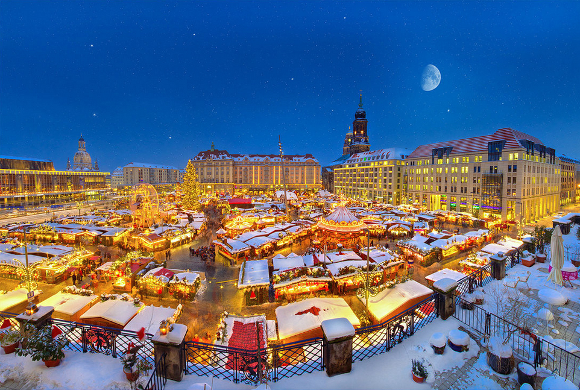

A bécsi városháza a híres Ring mentén található a Rathausplatz -on, nem túl messze a Hofburg épületétől. A Ring mentén minden változatos karácsonyi pompába öltözik, ehhez jön az üzletek kirakatainak karácsi dekorációja, így szinte egy mesevárosban érezhetjük magunkat a szúk, kanyargós macskaköves utcákon sétálva. A Rathaus előtti hatalmas fákon karácsonyi díszek és lampionok világítanak és a téren ámulatba ejt a mintegy 150 árus által kínált portékák változatossága. A városháza szintén karácsonyi díszkivilágítást kap, ablakai pedig adventi naptárként világítanak, így tényleg lenyűgöző látványban lehet része az ide látogatóknak. Az elsőszámú bécsi adventi vásár kihagyhatatlan téli látványosság az osztrák fővárosban, azonban éppen emiatt jókora tömegre készülhetnek a turisták, különösen a hétvégi napokon. Bécsben ezenkívül további 20 hivatalos karácsonyi vásár várja még a turisták tömegeit, amelyek mindegyike megér egy látogatást.
A 2 millió lakosú Bécs barátságos, élhető város (2022 és 2023 után 2024-ben is, összesen már ötödször a világ legélhetőbb, legjobb életminőségű nagyvárosának választották), sok érdekes látnivalóval, melyek közül néhány a magyar történelemben is fontos szerepet játszott. Az alábbiakban bemutatjuk Bécs látnivalóit.
LátnivalókProgramok A Rathausplatz 1975 óta ad otthont Bécs legnagyobb karácsonyi vásárának. Minden évben egy óriási karácsonyfát állítanak fel a tér közepén, körülötte pedig több mint 100 árus faházikója sorakozik. Akad itt minden, amire advent idején szükségünk lehet: ünnepi dekorációk, ajándékötletek, meleg ruházati cikkek és csillogó csecsebecsék. Családdal érkezel? A kicsik számára örök élmény lehet a vásár fénytengere, az ünnepi körhinta és ha részt vesznek egy kézműves foglalkozáson, még egy egyedi, kézzel fogható emlékük is lesz a bécsi kirándulásból.
Mindegyik vásárnak megvan a maga specialitása. Az egyiken a gazdák házi készítésű finomságai, a másikon a bio specialitások, a harmadikon távoli ízek élvezete vár ránk. Vannak standok, ahol csak és kizárólag karácsonyi édességeket kínálnak, itt minden található, ami édes, színes és cukros. Egy másik standon mellette kínálhatnak szárított gyümölcsöket, csokoládéval vagy olajos magvakkal. Mindkettőt érdemes megkóstolni. Sok helyen kínálnak édességet, kekszeket, süteményeket: például mézes puszedlit, gofrit, császármorzsát.
A Rathausplatzon található karácsonyi vásár 2024-ben november 15-től december 26-ig várja a látogatókat. A vásár nyitvatartása a következőképpen alakul: